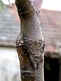

grafting

Definition: Grafting or graftage is a horticultural technique whereby tissues of plants are joined so as to continue their growth together. The upper part of the combined plant is called the scion () while the lower part is called the rootstock. The success of this joining requires that the vascular tissues grow together. The natural equivalent of this process is inosculation. The technique is most commonly used in asexual propagation of commercially grown plants for the horticultural and agricultural trades. The scion is typically joined to the rootstock at the soil line; however, top work grafting may occur far above this line, leaving an understock consisting of the lower part of the trunk and the root system.
Source: Wikipedia
Wikipedia Page (Something wrong with this association? Let us know.)
Wikidata Page (Something wrong with this association? Let us know.)